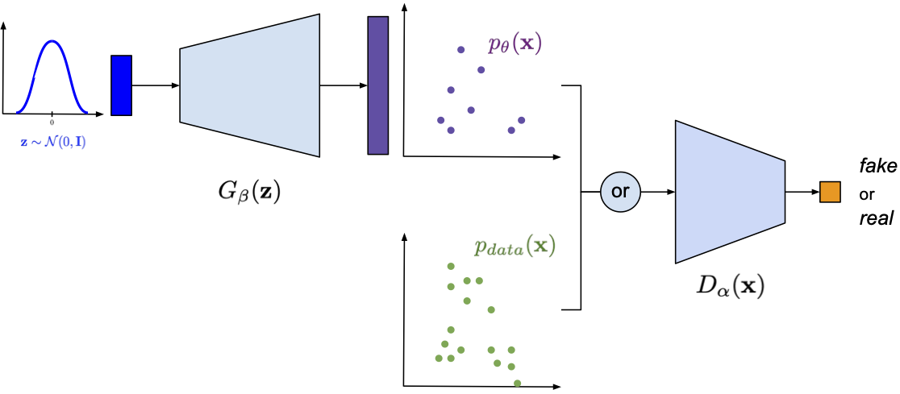

Once we discussed latent variable models, we claimed that they naturally define a generative process by first sampling latents $\mathbf{z} \sim p(\mathbf{z})$ and then generating observables $\mathbf{x} \sim p_{\theta}(\mathbf{x} | \mathbf{z})$. That is nice! However, the problem appears when we start thinking about training. To be more precise, the training objective is an issue. Why? Well, the probability theory tells us to get rid of all unobserved random variables by marginalizing them out. In the case of latent variable models, this is equivalent to calculating the (marginal) log-likelihood function in the following form: \begin{align} \log p_{\theta}(\mathbf{x}) = \log \int p_{\theta}(\mathbf{x} | \mathbf{z})\ p(\mathbf{z})\ \mathrm{d}\mathbf{z} . \end{align}
As we mentioned already in the post about VAEs (see here), the problematic part is calculating the integral because it is not analytically tractable unless all distributions are Gaussian and the dependency between $\mathbf{x}$ and $\mathbf{z}$ is linear. However, let us forget for a moment about all these issues and take a look at what we can do here. First, we can approximate the integral using Monte Carlo samples from the prior $p(\mathbf{z})$ that yields: \begin{align} \log p_{\theta}(\mathbf{x}) &= \log \int p_{\theta}(\mathbf{x} | \mathbf{z})\ p(\mathbf{z})\ \mathrm{d}\mathbf{z} \\ &\approx \log \frac{1}{S} \sum_{s=1}^{S} p_{\theta}(\mathbf{x}|\mathbf{z}_{s}) \\ &= \log \sum_{s=1}^{S} \exp\left( \log p_{\theta}(\mathbf{x}|\mathbf{z}_{s}) \right) - \log S \\ &= \mathrm{LogSumExp}_{s} \left\{ p_{\theta}(\mathbf{x}|\mathbf{z}_{s}) \right\} - \log S , \end{align} where $\mathrm{LogSumExp}_{s} \left\{ f(s) \right\} = \log \sum_{s=1}^{S} \exp\left( f(s) \right)$ is the log-sum-exp function.
Assuming for a second that this is a good (i.e., a tight) approximation, we turn the problem of calculating the integral into a problem of sampling from the prior. For simplicity, we can assume a prior that is relatively easy to be sampled from, e.g., the standard Gaussian, $p(\mathbf{z}) = \mathcal{N}(\mathbf{z}|0, \mathbf{I})$. In other words, we need to model $p_{\theta}(\mathbf{x}|\mathbf{z})$ only, i.e., pick a parameterization for it. Guess what, we will use a neural network again! If we model images, then we can use the categorical distribution for the conditional likelihood and then a neural network parameterizes the probabilities. Or, if we use a Gaussian distribution like in the case of energy-based models or diffusion-based deep generative models, then $p_{\theta}(\mathbf{x}|\mathbf{z})$ could be Gaussian as well and the neural network outputs the variance and/or the mean. Since the log-sum-exp function is differentiable (and the application of the log-sum-exp trick makes it even numerically stable), there is no problem learning this model end-to-end! This approach is a precursor of many deep generative models and was dubbed density networks (MacKay & Gibbs, 1999).
Figure 1. A schematic representation of a density net.
Density networks are important and, unfortunately, underappreciated deep generative models. It is worth knowing them at least for three reasons. First, understanding how they work helps a lot to comprehend other latent variables models and how to improve them. Second, they serve as a great starting point for understanding the difference between prescribed models and implicit models. Third, they allow us to formulate a non-linear latent variable model and train it using backpropagation (or a gradient descent, in general).
Alright, so now you may have some questions because we made a few assumptions on the way that might have been pretty confusing. The main assumptions made here are the following:
As a result, we get the following:
However, we pay a great price for all the goodies coming from the formulation of the density networks:
As you can see, the issue with dimensionality is especially limiting. What can we do with a model if it cannot be efficient for higher-dimensional problems? All interesting applications like image or audio analysis/synthesis are gone! So what can we do then? One possible direction is to stick to the prescribed models and apply variational inference (see here). However, the other direction is to abandon the likelihood-based approach. I know, it sounds ridiculous but it is possible and, unfortunately, works pretty well in practice.
Getting rid of Kullback-Leibler Let us think again what density networks tell us. First of all, they define a nice generative process: First sample latents and then generate observables. Clear! Then, for training, they use the (marginal) log-likelihood function. In other words, the log-likelihood function assesses the difference between a training datum and a generated object. To be even more precise, we first pick the specific probability distribution for the conditional likelihood $p_{\theta}(\mathbf{x}|\mathbf{z})$ that defines how to calculate the difference between the training point and the generated observables.
One may ask here whether there is a different fashion of calculating the difference between real data and generated objects. If we recall our considerations about hierarchical VAEs (see here), learning of the likelihood-based models is equivalent to optimizing the Kullback-Leibler (KL) divergence between the empirical distribution and the model, $KL\left[ p_{data}(\mathbf{x}) || p_{\theta}(\mathbf{x}) \right]$. The KL-based approach requires a well-behaved distribution because of the logarithms. Moreover, we can think of it as a local way of comparing the empirical distribution (i.e., given data) and the generated data (i.e., data generated by our prescribed model). By local we mean considering one point at a time and then summing all individual errors instead of comparing samples that we can refer to as global comparison. However, we do not need to stick to the KL divergence! Instead, we can use other metrics that look at a set of points (i.e., distributions represented by a set of points) like integral probability metrics (Sriperumbudur et al., 2009) (e.g., the Minimum Mean Discrepancy, MMD (Gretton et al., 2006)) or use other divergences (Van Erven & Harremosm, 2014).
Still, all of the mentioned metrics rely on defining explicitly how we measure the error. The question is whether we can parameterize our loss function and learn it alongside our model. Since we talk all the time about neural networks, can we go even further and utilize a neural network to calculate differences?
Getting rid of prescribed distributions Alright, we agreed on the fact that the KL divergence is only one of many possible loss functions. Moreover, we asked ourselves whether we can use a learnable loss function. However, there is also one question floating in the air, namely, do we need to use the prescribed models in the first place? The reasoning is the following. Since we know that density networks take noise and turn them into distribution in the observable space, do we really need to output a full distribution? What if we return a single point? In other words, what if we define the conditional likelihood as Dirac's delta: \begin{align} p_{\theta}(\mathbf{x}|\mathbf{z}) = \delta\left( \mathbf{x} - NN_{\theta}(\mathbf{z}) \right) . \end{align}
This is equivalnet to saying that instead of a Gaussian (i.e., a mean and a variance), $NN_{\theta}(\mathbf{z})$ outpts the mean only. Interestingly, if we consider the marginal distribution over $\mathbf{x}$'s, we get nicely behaved distribution. To see that, let us first calculate the marginal distribution: \begin{align} p_{\theta}(\mathbf{x}) = \int \delta\left( \mathbf{x} - NN_{\theta}(\mathbf{z}) \right)\ p(\mathbf{z})\ \mathrm{d}\mathbf{z}. \end{align}
Then, let us understand what is going on! The marginal distribution is an infinite mixture of delta peaks. In other words, we take a single $\mathbf{z}$ and plot a peak (or a point in 2D, it is easier to imagine) in the observable space. We proceed to infinity and once we do that, the observable space will be covered by more and more points and some regions will be denser than the others. This kind of modeling a distribution is also known as implicit modeling.
So where is the problem then? Well, the problem in the prescribed modeling setting is that the term $\log \delta\left( \mathbf{x} - NN_{\theta}(\mathbf{z}) \right)$ is ill-defined and cannot be used in many probability measures, including the KL-term, because we cannot calculate the loss function. Therefore, we can ask ourselves whether we can define our own loss function, perhaps? And, even more, parameterize it with neural networks! You must admit it sounds appealing! So how to accomplish that?
Adversarial loss Let us start with the following story. There is a con artist (a fraud) and a friend of the fraud (an expert) who knows a little about art. Moreover, there is a real artist that has passed away (e.g., Pablo Picasso). The fraud tries to mimic the style of Pablo Picasso as well as possible. The friend expert browses for paintings of Picasso and compares them to the paintings provided by the fraud. Hence, the fraud tries to fool his friend, while the expert tries to distinguish real paintings of Picasso from fakes. Over time, the fraud becomes better and better and the expert also learns how to decide whether a given painting is a fake. Eventually, and unfortunately to the world of art, work of the fraud may become indistinguishable from Picasso and the expert may be completely uncertain about the paintings and whether they are fakes.
Now, let us formalize this wicked game. We we call the expert a discriminator that takes and object $\mathbf{x}$ and returns a probability whether it is real (i.e., coming from the empirical distribution), $D_{\alpha}: \mathcal{X} \rightarrow [0,1]$. We refer to the fraud as a generator that takes noise and turns it into an object $\mathbf{x}$, $G_{\beta}: \mathcal{Z} \rightarrow \mathcal{X}$. All $\mathbf{x}$'s coming from the empirical distribution $p_{data}(\mathbf{x})$ are called real and all $\mathbf{x}$'s generated by $G_{\beta}(\mathbf{z})$ are dubbed fake. Then, we construct the objective function as follows:
Eventually, we face to following learning objective: \begin{align} \min_{\beta} \max_{\alpha} \mathbb{E}_{\mathbf{x} \sim p_{real}} \left[ \log D_{\alpha}(\mathbf{x}) \right] + \mathbb{E}_{\mathbf{z} \sim p(\mathbf{z})} \left[ \log \left(1-D_{\alpha}\left(G_{\beta}(\mathbf{z})\right)\right) \right] . \end{align} We refer to $\ell(\alpha, \beta)$ as the adversarial loss since there are two actors trying to achieve two opposite goals.
GANs Let us put everything together:
The resulting class of models is called Generative Adversarial Networks (GANs) (Goodfellow et al., 2014). In Figure 2, we present the idea of GANs and how they are connected to density networks. Notice that the generator part constitutes an implicit distribution, i.e., a distribution from an unknown family of distributions, and its analytical form is unknown as well, however, we can sample from it.

Figure 2. A schematic representation of GANs. Please note the part of the generator and its resemblance to density networks.
Believe me or not but we have all components to implement GANs. Let us look into all of them step-by-step. In fact, the easiest way to understand them is to implement them.
Generator The first part is generator, $G_{\beta}(\mathbf{z})$, which is simply a deep neural network. The code for a class of the generator is presented below. Notice that we distinguish between a function for generating, namely, transforming $\mathbf{z}$ to $\mathbf{x}$, and sampling that first samples $\mathbf{z} \sim \mathcal{N}(0, \mathbf{I})$ and then calls generate.
class Generator(nn.Module):
def __init__(self, generator_net, z_size):
super(Generator, self).__init__()
# We need to init the generator neural net.
self.generator_net = generator_net
# We also need to know the size of the latents.
self.z_size = z_size
def generate(self, z):
# Generating for given z is equivalent to applying the neural net.
return self.generator_net(z)
def sample(self, batch_size=16):
# For sampling, we need to sample first latents.
z = torch.randn(batch_size, self.z_size)
return self.generate(z)
def forward(self, z=None):
if z is None:
return self.sample()
else:
return self.generate(z)
Discriminator The second component is the discriminator. Here, the code is even simpler because it consists of a single neural network. The code for a class of the discriminator is provided below.
class Discriminator(nn.Module):
def __init__(self, discriminator_net):
super(Discriminator, self).__init__()
# We need to init the discriminator neural net.
self.discriminator_net = discriminator_net
def forward(self, x):
# The forward pass is just about applying the neural net.
return self.discriminator_net(x)
GAN Now, we are ready to combine these two components. In our implementation, a GAN outputs the adversarial loss either for the generator or the discriminator. Maybe the code below is overkill, however, it is better to write a few more lines and properly understand what is going on than applying some unclear tricks.
class GAN(nn.Module):
def __init__(self, generator, discriminator, EPS=1.e-5):
super(GAN, self).__init__()
print('GAN by JT.')
# To put everything together, we need the generator and
# the discriminator. NOTE: Both are intanced of classes!
self.generator = generator
self.discriminator = discriminator
# For numerical issue, we introduce a small epsilon.
self.EPS = EPS
def forward(self, x_real, reduction='avg', mode='discriminator'):
# The forward pass calculates the adversarial loss.
# More specifically, either its part for the generator or
# the part for the discriminator.
if mode == 'generator':
# For the generator, we first sample FAKE data.
x_fake_gen = self.generator.sample(x_real.shape[0])
# Then, we calculate outputs of the discriminator for the FAKE data.
# NOTE: We clamp here for the numerical stability later on.
d_fake = torch.clamp(self.discriminator(x_fake_gen), self.EPS, 1. - self.EPS)
# The loss for the generator is log(1 - D(G(z))).
loss = torch.log(1. - d_fake)
elif mode == 'discriminator':
# For the discriminator, we first sample FAKE data.
x_fake_gen = self.generator.sample(x_real.shape[0])
# Then, we calculate outputs of the discriminator for the FAKE data.
# NOTE: We clamp for the numerical stability later on.
d_fake = torch.clamp(self.discriminator(x_fake_gen), self.EPS, 1. - self.EPS)
# Moreover, we calculate outputs of the discriminator for the REAL data.
# NOTE: We clamp for... the numerical stability (again).
d_real = torch.clamp(self.discriminator(x_real), self.EPS, 1. - self.EPS)
# The final loss for the discriminator is log(1 - D(G(z))) + log D(x).
# NOTE: We take the minus sign because we MAXIMIZE the adversarial loss wrt
# discriminator, so we MINIMIZE the negative adversarial loss wrt discriminator.
loss = -(torch.log(d_real) + torch.log(1. - d_fake))
if reduction == 'sum':
return loss.sum()
else:
return loss.mean()
def sample(self, batch_size=64):
return self.generator.sample(batch_size=batch_size)
# First, we initialize the generator and the discriminator
# -generator
generator_net = nn.Sequential(nn.Linear(L, M), nn.ReLU(),
nn.Linear(M, D), nn.Tanh())
generator = Generator(generator_net, z_size=L)
# -discriminator
discriminator_net = nn.Sequential(nn.Linear(D, M), nn.ReLU(),
nn.Linear(M, 1), nn.Sigmoid())
discriminator = Discriminator(discriminator_net)
# Eventually, we initialize the full model
model = GAN(generator=generator, discriminator=discriminator)
Training One might think that the training procedure for GANs is more complicated than for any of the likelihood-based models. However, it is not the case. The only difference is that we need two optimizers instead of one. An example of a code with a training loop is presented below.
# We use two optimizers:
# optimizer_dis - an optimizer that takes the parameters of the discriminator
# optimizer_gen - an optimizer that takes the parameters of the generator
for indx_batch, batch in enumerate(training_loader):
# -Discriminator
# Notice that we call our model with the 'discriminator' mode.
loss_dis = model.forward(batch, mode='discriminator')
optimizer_dis.zero_grad()
optimizer_gen.zero_grad()
loss_dis.backward(retain_graph=True)
optimizer_dis.step()
# -Generator
# Notice that we call our model with the 'generator' mode.
loss_gen = model.forward(batch, mode='generator')
optimizer_dis.zero_grad()
optimizer_gen.zero_grad()
loss_gen.backward(retain_graph=True)
optimizer_gen.step()
In the experiments, we normalized images and scaled them to $[-1, 1]$ as we did for DDGMs. The full code (with auxiliary functions) that you can play with is available here: [link]. After running it, you can expect similar results to those in Figure 3.
A B C D
Figure 3. Examples of results after running the code for GANs. A: Real images. B: Fake images. C: The validation curve for the discriminator. D: The validation curve for the generator.
In the previous blog posts, we have not commented on the results. However, we make an exception here. Please note, my curious reader, that now we do not have a nicely converging objective. On the contrary, the adversarial loss or its generating part is jumping all over the place. That is a known fact following from the min-max optimization problem. Moreover, the loss is learnable now so it is troublesome to say where the optimal solution is since we update the loss function as well.
Another important piece of information is that training GANs is indeed a pain. First, it is hard to decipher and properly understand the values of the adversarial loss. Second, learning is rather slow and requires many iterations (by many I mean hundreds if not thousands). If you look into generations in the first few epochs, you may be discouraged because a model may seem to overfit. That is the problem, we must be really patient to see whether we are on the good track. Moreover, you may also need to pay special attention to hyperparameters, e.g., learning rates. It requires a bit of experience or simply time to play around with learning rate values in your problem.
Once you get through learning GANs, the reward is truly amazing. In the presented problem, with extremely simple neural nets, we are able to synthesize digits of high quality. That's the biggest advantage of GANs!
Since the publication of the seminal paper on GANs (Goodfellow et al., 2014) (however, the idea of the adversarial problem could be traced back to (Schmidhuber, 1990)), there was a flood of GAN-based ideas and papers. I would not even dare to mention a small fraction of them. The field of implicit modeling with GANs is growing constantly. I will try to point to a few important papers:
Each of these ideas constitutes a separate research direction followed by thousands of researchers. If you are interested in pursuing any of these, I suggest picking one the paper mentioned here and start digging!
(Arjovsky et al., 2017) Arjovsky, M., Chintala, S., & Bottou, L. (2017, July). Wasserstein generative adversarial networks. In International conference on machine learning (pp. 214-223). PMLR.
(Dieng et al., 2019) Dieng, A. B., Ruiz, F. J., Blei, D. M., & Titsias, M. K. (2019). Prescribed generative adversarial networks. arXiv preprint arXiv:1910.04302.
(Donahue et al., 2016) Donahue, J., Krähenbühl, P., & Darrell, T. (2016). Adversarial feature learning. arXiv preprint arXiv:1605.09782.
(Dumoulin et al., 2016) Dumoulin, V., Belghazi, I., Poole, B., Mastropietro, O., Lamb, A., Arjovsky, M., & Courville, A. (2016). Adversarially learned inference. arXiv preprint arXiv:1606.00704.
(Dziugaite et al., 2015) Dziugaite, G. K., Roy, D. M., & Ghahramani, Z. (2015). Training generative neural networks via maximum mean discrepancy optimization. arXiv preprint arXiv:1505.03906.
(Van Erven & Harremos, 2014) Van Erven, T., & Harremos, P. (2014). Rényi divergence and Kullback-Leibler divergence. IEEE Transactions on Information Theory, 60(7), 3797-3820.
(Gretton et al., 2006) Gretton, A., Borgwardt, K., Rasch, M., Schölkopf, B., & Smola, A. (2006). A kernel method for the two-sample-problem. Advances in neural information processing systems, 19, 513-520.
(Goodfellow et al., 2014) Goodfellow, I., Pouget-Abadie, J., Mirza, M., Xu, B., Warde-Farley, D., Ozair, S., Courville, A., & Bengio, Y. (2014). Generative adversarial nets. Advances in neural information processing systems, 27.
(Huszar, 2017) Huszar, F. (2017). Variational inference using implicit distributions. arXiv preprint arXiv:1702.08235.
(Karras et al., 2019) Karras, T., Laine, S., & Aila, T. (2019). A style-based generator architecture for generative adversarial networks. In Proceedings of the IEEE/CVF Conference on Computer Vision and Pattern Recognition (pp. 4401-4410).
(Kim & Bengio, 2016) Kim, T., & Bengio, Y. (2016). Deep directed generative models with energy-based probability estimation. arXiv preprint arXiv:1606.03439.
(Li et al., 2015) Li, Y., Swersky, K., & Zemel, R. (2015, June). Generative moment matching networks. In International Conference on Machine Learning (pp. 1718-1727). PMLR.
(Lucic et al., 2018) Lucic, M., Kurach, K., Michalski, M., Gelly, S., & Bousquet, O. (2018). Are GANs Created Equal? A Large-Scale Study. Advances in Neural Information Processing Systems, 31.
(MacKay & Gibbs, 1999) MacKay, D. J., & Gibbs, M. N. (1999). Density networks. Statistics and neural networks: advances at the interface, 129-145.
(Mescheder et al., 2018) Mescheder, L., Geiger, A., & Nowozin, S. (2018, July). Which training methods for GANs do actually converge?. In International conference on machine learning (pp. 3481-3490). PMLR.
(Mirza & Osindero, 2014) Mirza, M., & Osindero, S. (2014). Conditional generative adversarial nets. arXiv preprint arXiv:1411.1784.
(Mohamed & Lakshminarayanan, 2016) Mohamed, S., & Lakshminarayanan, B. (2016). Learning in implicit generative models. arXiv preprint arXiv:1610.03483.
(Nowozin et al., 2016) Nowozin, S., Cseke, B., & Tomioka, R. (2016, December). f-gan: Training generative neural samplers using variational divergence minimization. In Proceedings of the 30th International Conference on Neural Information Processing Systems (pp. 271-279).
(Odena et al., 2017) Odena, A., Olah, C., & Shlens, J. (2017, July). Conditional image synthesis with auxiliary classifier gans. In International conference on machine learning (pp. 2642-2651). PMLR.
(Salimans et al., 2016) Salimans, T., Goodfellow, I., Zaremba, W., Cheung, V., Radford, A., & Chen, X. (2016). Improved techniques for training gans. Advances in neural information processing systems, 29, 2234-2242.
(Schmidhuber, 1990) Schmidhuber, J. (1990). Making the world differentiable: On using fully recurrent self-supervised neural networks for dynamic reinforcement learning and planning in non-stationary environments. Institut für Informatik, Technische Universität München. Technical Report FKI-126, 90.
(Sriperumbudur et al., 2009) Sriperumbudur, B. K., Fukumizu, K., Gretton, A., Schölkopf, B., & Lanckriet, G. R. (2009). On integral probability metrics, $\phi$-divergences and binary classification. arXiv preprint arXiv:0901.2698.
(Tran et al., 2017) Tran, D., Ranganath, R., & Blei, D. M. (2017, December). Hierarchical implicit models and likelihood-free variational inference. In Proceedings of the 31st International Conference on Neural Information Processing Systems (pp. 5529-5539).
(Zhai et al., 2016) Zhai, S., Cheng, Y., Feris, R., & Zhang, Z. (2016). Generative adversarial networks as variational training of energy based models. arXiv preprint arXiv:1611.01799.
(Zhu et al., 2017) Zhu, J. Y., Park, T., Isola, P., & Efros, A. A. (2017). Unpaired image-to-image translation using cycle-consistent adversarial networks. In Proceedings of the IEEE international conference on computer vision (pp. 2223-2232).